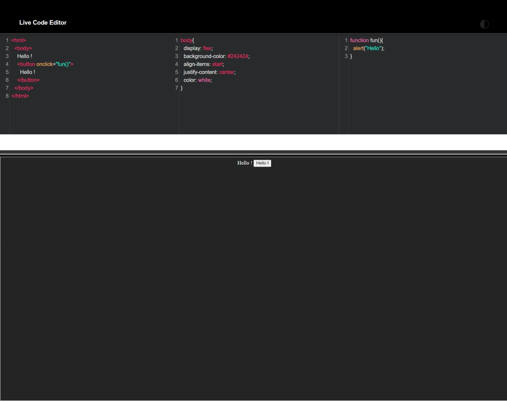

This is a Live Code Editor which is useful for the Students interested in Designing Web Pages in HTML, CSS ans JS.
It is so frustrating to Write, Save and then Open browser and Refresh Rinse-Repeatedly. So, i have a solution for this in this Editor.
Build:
The frontend is designed by React Js and the Themes, Syntax, Auto-Closing Brackets, Colors are imported from the Codemirror Library individually HTML, CSS, JS and their Syntax.
Here, I've used panda-syntax [ for dark mode ] and mdn-like [ for light mode ].
The Code mirror engine will take care of the live update of the code and preview them in live time.
Screenshots :

Advantages:
No more Installation of VS Code Live Server Extensions, Auto Save features and N number of times save and refreshes. Simply type the code , there your webpage is being made at live time !
Disadvantages:
You have to download those codes to save them in your local storage because, we are using a virtual Engine for Preview and you will have the download button in the same component.